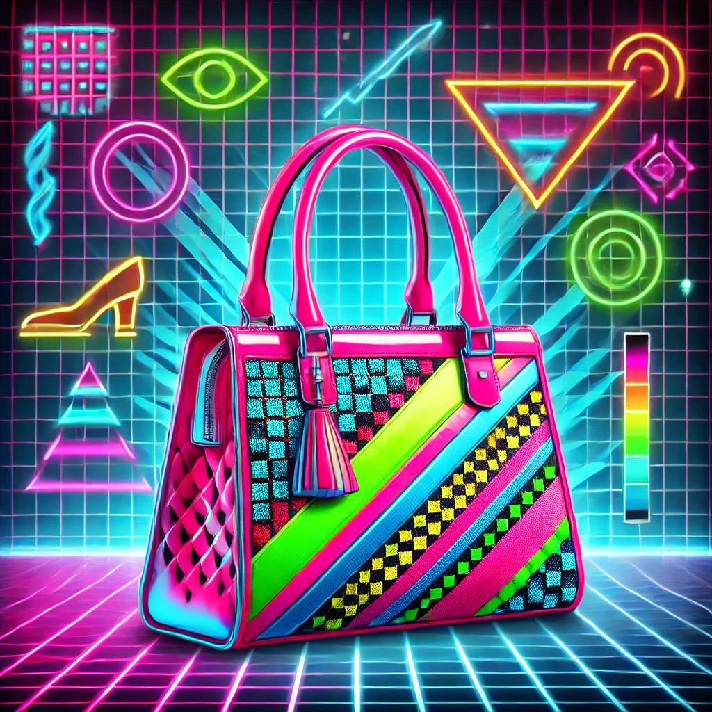

Découvrez notre collection élégante et intemporelle.
Découvrez le sac maintenantCe sac à main vintage est un hommage intemporel aux années 60. Inspiré par l'élégance des icônes de mode comme Audrey Hepburn et Jackie Kennedy, il incarne l'élégance féminine et intemporelle de cette époque.
Revivez l'âge d'or du style vintage aujourd'hui – votre touche rétro vous attendExprimez votre audace avec ce sac néon, inspiré des nuits vibrantes des années 80. Madonna et Prince, icônes de l'extravagance, auraient adoré ce style où l'accessoire exprime la rébellion et l'indépendance.
 Ajoutez une touche néon à votre style avant qu'il ne soit trop tardMinimalisme et élégance se rencontrent dans ce sac des années 2000, inspiré par des icônes du style épuré comme Victoria Beckham. Il reflète une simplicité moderne et sophistiquée.
Commandez maintenant et adoptez l'élégance minimaliste dès demainCe sac incarne le futur de la mode : éthique, durable, et toujours chic. Conçu pour celles qui, comme Emma Watson, choisissent de concilier style et respect de la planète.
Faites le choix du style éco-responsable maintenant et contribuez à un futur durable